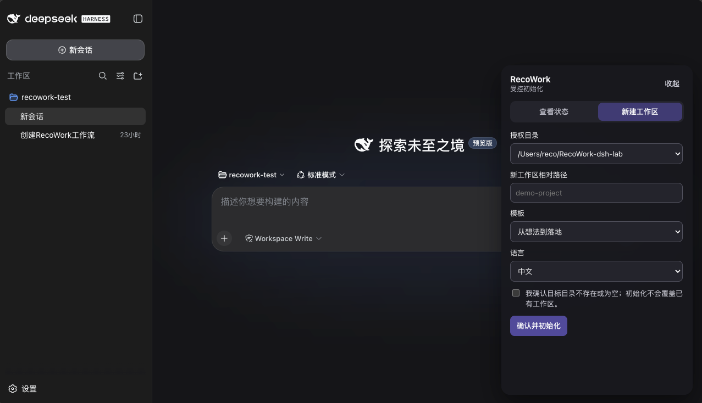

安装 DSH 插件
将发布版 Bundle 加入 DSH 的 Web profile。
dsh plugin --profile web add recowork-dsh@latestDeepSeek Harness
recowork-dsh 将 RecoWork 的受限初始化、只读状态和工作协议带入 DeepSeek Harness。它不创建第二套项目格式，也不会获得任意命令或文件访问权限。

三步安装
开始前请先安装 DSH，并至少启动过一次 Web profile。授权目录必须是你拥有的、已经存在的绝对路径。
将发布版 Bundle 加入 DSH 的 Web profile。
dsh plugin --profile web add recowork-dsh@latest把目录换成你想让 RecoWork 使用的位置。向导会备份 DSH 配置，并只写入自己的受管配置块。
npx --yes recowork-dsh@latest setup --root /absolute/path/to/your/recowork-lab打开 DSH 后，右下角会出现可收起的 RecoWork 工作区入口。
dsh web进入工作
从授权目录中选择已识别的 RecoWork 工作区，查看当前阶段、待确认事项、当前文档和工作区健康度。此操作只读。
选择模板、生成语言和相对目录；勾选确认后才可初始化。服务端仍会拒绝越权路径、非空目录和不受支持的选项。
语言
面板会实时跟随 DSH 的中文 / English 设置，无需刷新。工作区中的路径、阶段与事项属于用户内容，保留原始语言。
更新
更新插件后重启 DSH Web 即可。正常更新不会重写你的工作区；如需调整授权目录，重新运行 setup 并明确传入所需的全部 --root。
dsh plugin --profile web update recowork-dsh边界
插件没有任意 Shell、任意文件读取、删除、移动、重命名、自动升级或工作区修复能力。已有工作区始终归用户所有。
常见问题